分享人：杨梓雄
目录
1.背景介绍
2.知识剖析
3.常见问题
4.解决方案
5.编码实战
6.扩展思考
7.参考文献
8.更多讨论
ECMAscript中的函数使用function关键字来声明，后跟一组参数以及函数体，函数的基本语法如下所示：
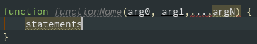
1.函数不介意传递进来多少个参数。
2.参数不在乎是什么数据类型。
3.即使定义函数只接受两个参数，在调用的时候也未必一定要传递两个参数。
4.ECMAscript中的参数在内部是用一个数组来表示的，可以通过arguments对象来访问这个参数数组。
5.上面的所指的数组，也就是arguments并不是Array的实例，它其实是个伪数组。
可以通过访问arguments对象的length属性获知有多少个参数传递给了函数
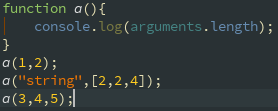1.函数能够接收任意参数并分别实现适当功能。
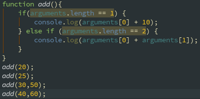2.非严格模式下可以出先同名形参，而且只能访问最后出现的形参。
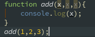3.arguments对象可以与命名参数一起使用。
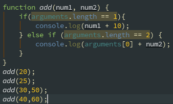4.arguments对象中的值永远与对应命名参数的值保持同步。
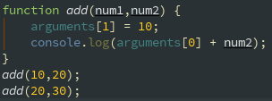5.arguments对象与命名参数的并不是访问相同的内存空间；它们的内存空间的独立的，但是它们的值会同步。
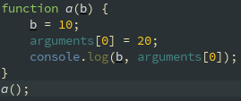6.当调用函数的时候传入的实参比函数声明时指定的形参个数要少，剩下的形参都将设置为undeined。
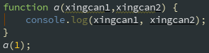1.js中的函数没有重载
1.没有重载解决方案：通过检查传入函数中参数的类型和数量并作出不同的反应，来模仿方法的重载
如何理解arguments对象与命名参数的并不是访问相同的内存空间；它们的内存空间的独立的，但是它们的值会同步。
带参数
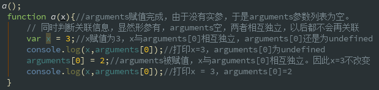不带参数
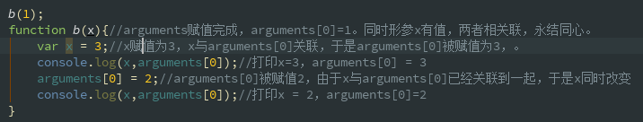相反
带参数
不带参数
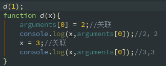参考三：javascript高级程序设计
讨论时间到，欢迎大家提问！
感谢大家观看
BY : 杨梓雄